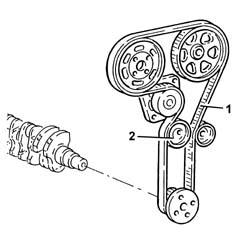
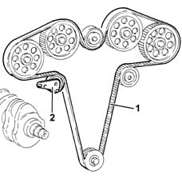
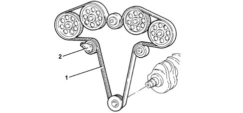
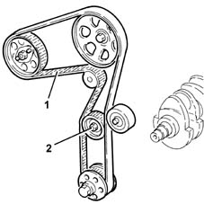
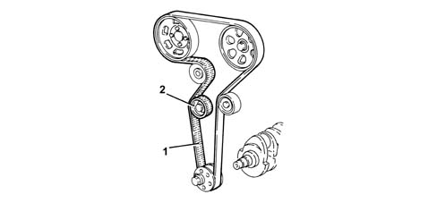
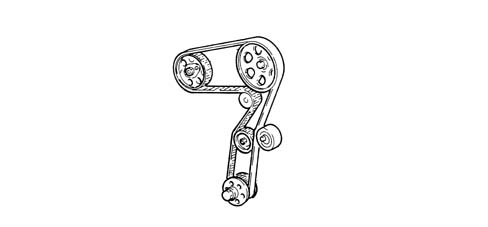
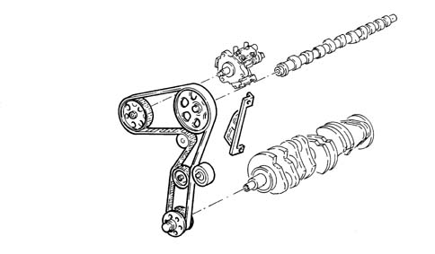

1032B belt timing system
- Path
- Descriptions > 10 ENGINE > 1032 TIMING SYSTEM > 1032B belt timing system
- Kind
- system description
- Applies to
- engines: 1.6 TS , 1.8 TS, 2.0 JTS, 2.5 V6, 3.2 V6, 1.9 JTD 8v , 1.9 JTD 16v, 2.0 JTS, 2.4 JTD 10v, 2.4 JTD 20v; all production periods
- Interactive page
- https://sloeber94.github.io/elrnDB-a156/en/#/3232831
Applies to: engines: 1.6 TS , 1.8 TS; all production periods
It is directly operated, via the toothed belt (1), tensioned by an automatic tensioner (2) which means that no maintenance operations for checking the tension need be carried out.

Applies to: engines: 2.5 V6; all production periods
It is directly operated, via the toothed belt (1), tensioned by an "Litens" automatic tensioner (2) which means that no maintenance operations for checking the tension need be carried out.

Applies to: engines: 3.2 V6; all production periods
OPERATTION
It is directly operated, via the toothed belt (1), tensioned by an 'Litens' automatic tensioner (2) which means that no maintenance operations for checking the tension need be carried out.

Applies to: engines: 1.9 JTD 8v , 2.4 JTD 10v; all production periods
It is directly operated, via the toothed belt (1), tensioned by an automatic tensioner (2) which means that no maintenance operations for checking the tension need be carried out.

Applies to: engines: 2.0 JTS, 2.0 JTS; all production periods
CONSTRUCTION FEATURES
It is directly operated, via the toothed belt (1), tensioned by an automatic tensioner (2) which means that no maintenance operations for checking the tension need be carried out.

Applies to: engines: 1.9 JTD 16v; all production periods
CONSTRUCTION FEATURES
Controlled directly via the toothed belt which also controls the camshaft in addition to the pressure pump and the water pump.

Applies to: engines: 2.4 JTD 20v; all production periods
COMPONENT DESCRIPTION
TIMING DRIVE BELT
Specifcations
Type
Controlled directly via the toothed belt which also controls the inlet camshaft in addition to the pressure pump and the water pump.
